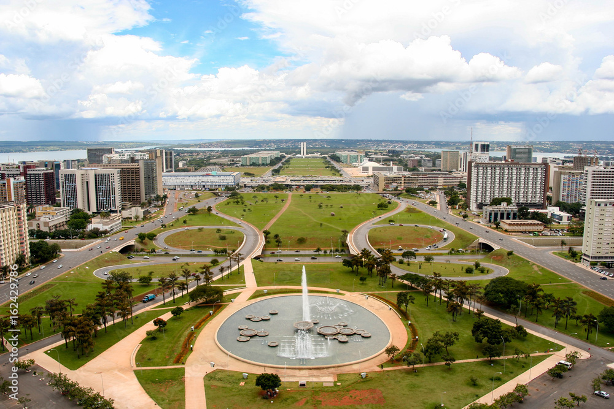
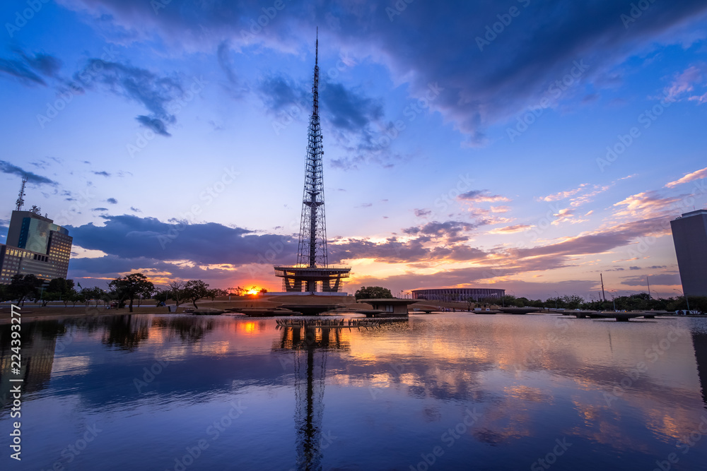
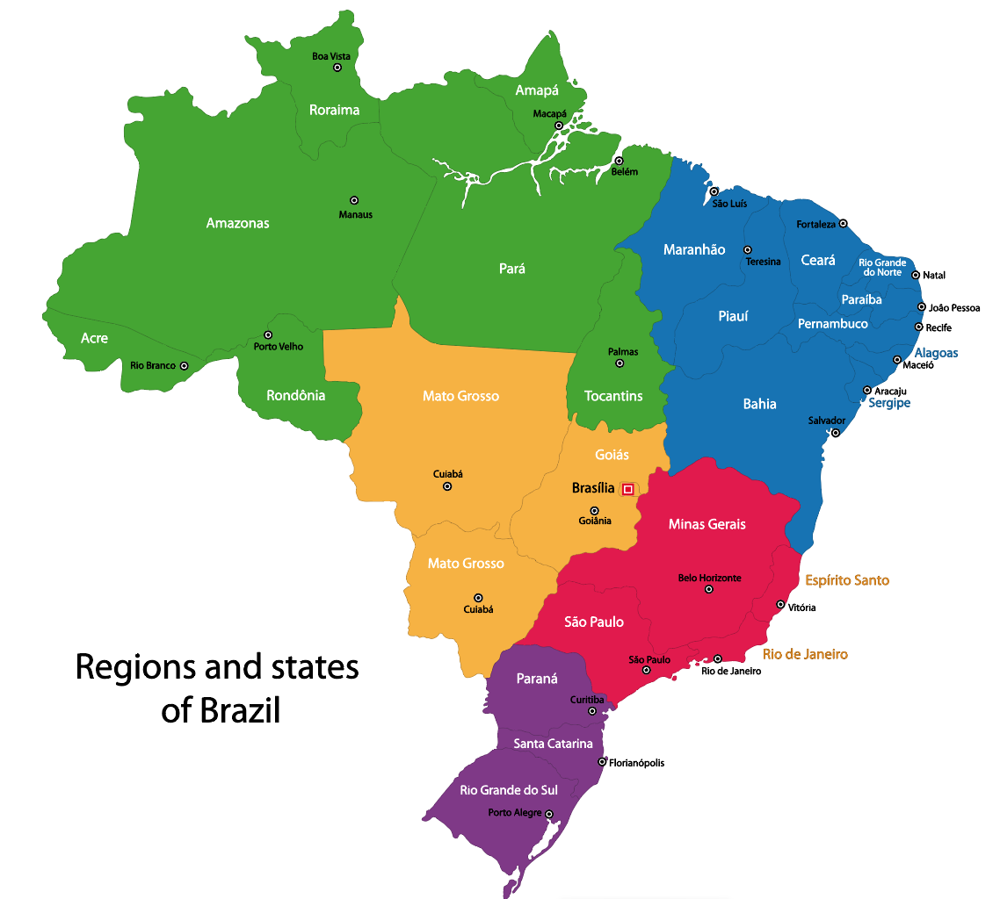
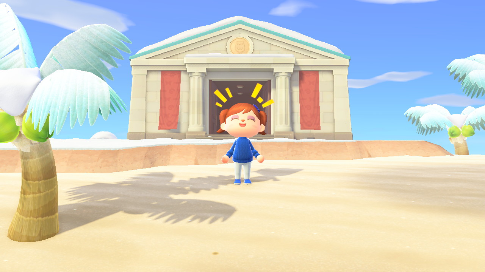
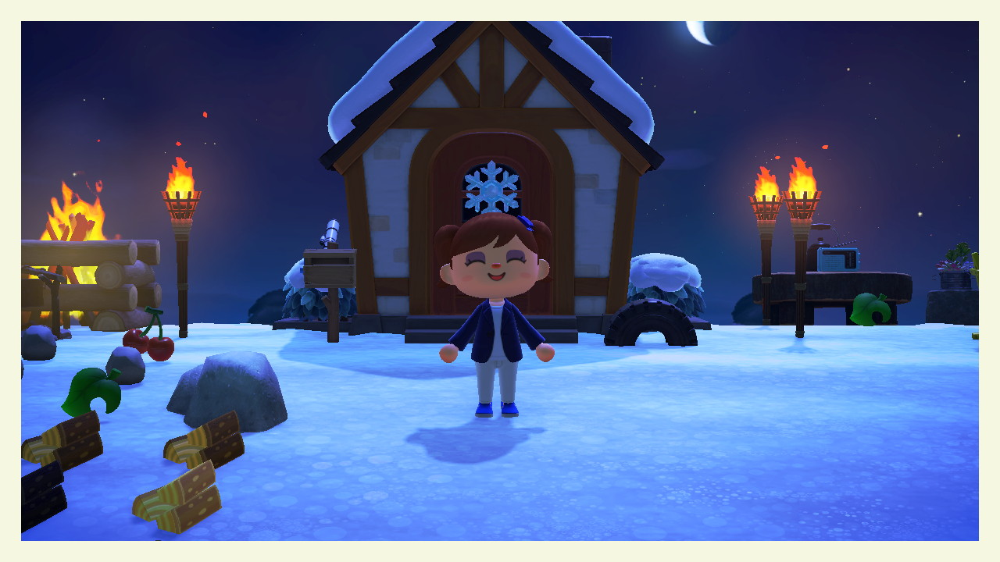

My Name is Nathálya Menezes and I am from Brasília, Brazil. I was born and grown in Brazil's capital (Brasília). I've really enjoyed living in my city because its architecture and design are entirely different from my country's cities in general. Brasília is located in the geographical center of the country. Consequently, this location has discomforting weather such as dry and cold (17°C in Brazil is cold weather already), hot and dry, hotter, and rainy.
  I have 2 activities I could say that I have fun doing them. The first is practicing crossfit. I used to hate any kind of sport since I was a kid, however since I knew Crossfit I could say that I am a lover and admirer. It is an activity you are able to develop many skills and do things you thought you were not able.
Animal Crossing is a social simulation game where you have an empty island, and everything you need to do is decorate it. You start from 0, you have no buildings, no decorations and everything you need to do is to follow some directions, achieve some objectives to unlock new tools building and ornaments. You can also meet frieds, talk to and visit them. I love it because I rarely get nervous, upset or irritated. I just have fun and spent some time playing.I am new at Animal Crossing so my island is not that nice, but you find amazing islands online.
 